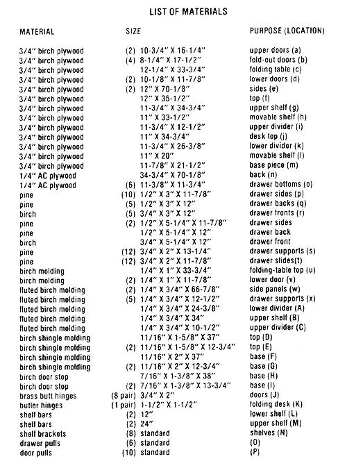
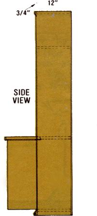
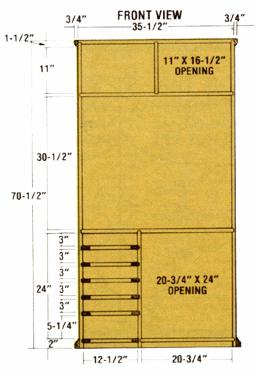
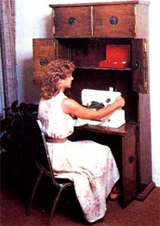
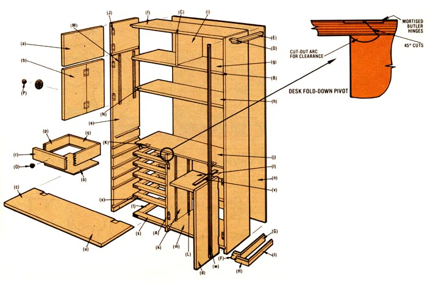

Are you looking for an attractive way to keep a handle on your needlework necessities?
A sewing machine-and its associated notion scan take up a considerable amount of space in a small home . . . and, even in a spacious abode, it's all too easy to lose track of bobbins, needles, scissors, thread, etc. Well, to solve such storage problems, and to make it possible to keep those accessories (and the machine itself) out of sight when they're not in use, researcher Clarence Goosen has designed an attractive and functional piece of cabinetry. Clarence's sewing center sports a fold-out worktable, four cabinets to hold large items (such as material), and a half-dozen drawers suited to the smaller paraphernalia that are so fundamental to sewing. Constructing MOTHER's sewing center is a straightforward cabinetmaking project that'll require a table (or radial arm) saw with combination, panel, and dado blades . . . a router and a rabbeting bit ("MOTHER's Router/Shaper Table", which was de scribed on page 160 of issue 61, would be very helpful here) . . . and assorted hand tools. Most of the joints in the cabinet are open mortise and tenon or dado (both of which can be prepared with the tools just mentioned), but finger or dovetail joints would be best for the drawer sides. These may be cut by hand with a backsaw or with a jig and router.
ASSEMBLY ORDER
The exploded drawing we've included should give you most of the help you'll need in building the sewing center, but Clarence has some hints about the assembly that should make the process go more smoothly. Begin by preparing all of the major structural parts before you attempt to glue the sewing center together. By doing so, you can check for fit in advance . . . which will help avoid the agonizing problem of reaching a crucial stage and finding that a piece won't slip in. (The cutting of the doors, drawers, and trim, however, can wait for the completion of the frame.)
[1] Because most of the dadoes are in the sewing center's sides, it's a good idea to get those pieces out of the way at the start. After marking them carefully, relieve 3/4"wide by 3/8"-deep slots at the positions shown on the drawing. Then rabbet the inner ends of the sides . . . making them 3/8" wide and 3/8" deep, using either the power saw or the router.
[2] The lower divider must also be dadoed to 3/4" wide by 3/8" deep on one side to accommodate the drawer slides. Like the parts we readied in the previous step, this panel extends to floor level . . . with dadoes to hold up the sewing center's base.
[3] Prepare the top-which has a 3/4"wide, 3/8"-deep dado and 3/8" rabbeted ends-and the base piece.
[4] Cut the upper compartment divider and the upper shelf, preparing a 3/4"-wide, 3/8"deep dado in the latter.
[5] Saw the desk top to its full size, with the front cut at 45 ° so that the upper surface is larger. A matching taper on the fold down desk will allow it to have a solid stop and to pivot without interfering with the fixed desk top. However, a space must be rounded out in the top of the lower divider to allow the folding desk to pass through its arc.
[6] When the sawing is finished, mortise the relief's for the butler hinges in the desk top and fold-down desk, but don't mount the hinges at this time. Then glue a length of 1/4" X 1" trim to the outer edge of the folding desk lid.
[7] Prepare open mortises and tenons on all of the 24 drawer slide and support pieces, and-once you've established that all the frames will be square and of the same size glue the six four-piece assemblies together.
[8] Dry-fit the parts to see that everything will join snugly, and then glue the cabinet sides, top, shelf, desk top, dividers, drawer slides, and bottom pieces together . . . allowing several hours for the adhesive to dry.
[9] Cut out the upper, folding, and lower doors to match the openings, and prepare the mortises for their butt hinges. Mount the frame sides of the hinges flush, in order to provide enough clearance to allow the doors to swing. (A good way to insure this is to first saw a board large enough to cover the whole opening . . . and then cut out the individual panels.) Note, too, that the two bottom doors need strips of 1/4" X 1" trim glued across their tops to enable the fold down desk to rest on them. (At this time, you also can go ahead and drill holes for mounting the door pulls.)
[10] Saw the drawer components to size, dado the 1/4" drawer-bottom slot, and prepare the finger or dovetail joints (whichever you've chosen to use), noting that those for the drawer fronts are half-blind. Then drill the drawer fronts to accept their pulls. Now, from the 1/4" plywood, prepare the drawer bottoms, and go on to glue all of the parts together.
[11] Trim out the two movable shelves from the 3/4" birch plywood.
[12] Apply the 1-5/8" shingle stop molding around the top of the sewing center, and then glue the larger molding around the bottom. The door stop that goes on top of the lower shingle stop widens the base for stability and gives the cabinet a slightly more ornate appearance. (Clarence made all of this trim from birch stock, using MOTHER's router table, but the commercial molding we've specified will suffice.)
[13] Cut the 1/4" plywood back to size, and glue it into its rabbets in the rear of the frame . . . adding wire brads to secure it in place.
[14] Glue the fluted molding along the front of the exposed plywood edges.
[15] Sand all of the parts (mounted or not), apply stain, and finish them with poly urethane varnish.
[16] Mount the shelf-hanger strips, and position the movable shelves.
[17] Screw the butt hinges to the doors, mark their positions on the sides and lower divider, and attach the doors . . . then follow the same procedure for mounting the fold down desk. Once you've bolted on all of the pulls, you're done! The sewing center would make an attractive, space-efficient addition to almost any household that's lucky enough to count a seamster or seamstress among its members. Furthermore, all of the wood and hardware can be purchased new for less than $100. And, of course, the real dividends will be paid when the stitcher's efficiency is increased because he or she has everything close at hand . . . yet still out of the reach of small, prying fingers!
|
 |
 |
 |
|
 |
 |
|